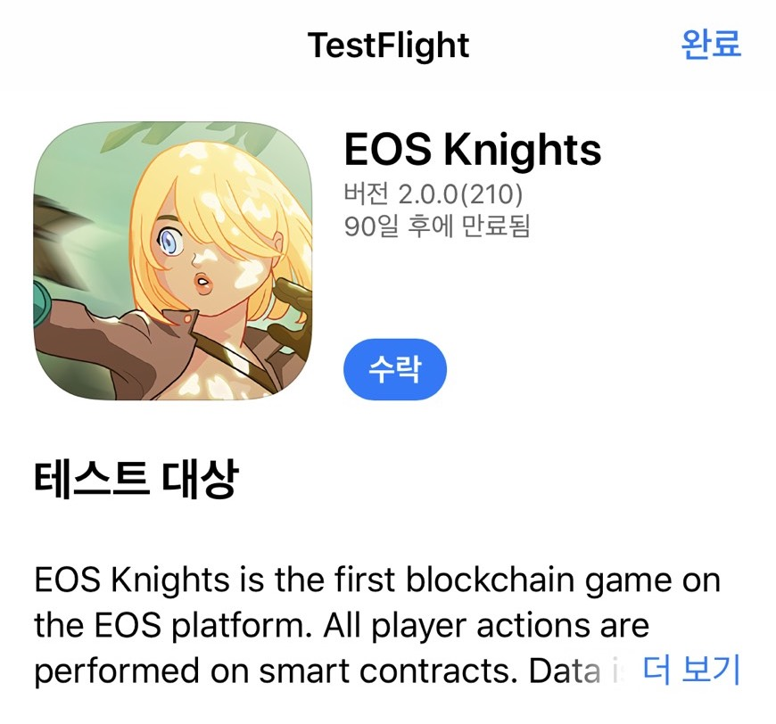

EOS Knights iOS 安装指南
在iOS上享受 EOS Knights!
方法1。 使用Test Flight安装
如何安装
- 如果您使用的是旧版本，请先删除旧的EOS Knights应用程序。
- 单击“下载”按钮，然后安装Test-Flight应用程序。
- 您可以从Test-Flight应用程序中找到EOS Knights。
- 安装EOS Knights应用程序。

方法2.企业认证
我们建议使用Test-Flight应用程序方法。 但是如果您在使用Test-Flight时遇到问题，也可以使用此方法。
Download
1.第一次打开 EOS Knights 时会弹出如下弹窗:
2.首次安装的用户，请前往「设置-通用-设备管理」;
* 部分手机「设备管理」是「描述文件与设备管理」
3.点击「信任」，然后返回桌面打开 EOS Knights。
* 部分手机的「信任」是「验证」